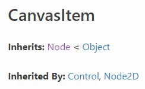
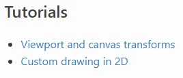
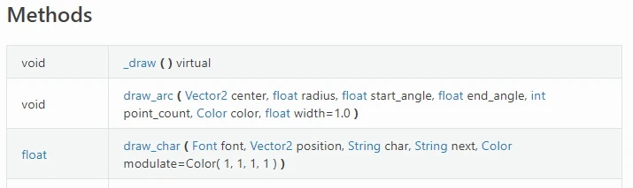
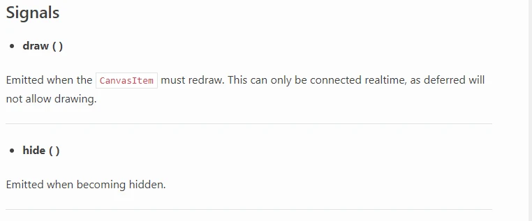
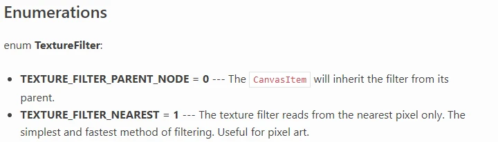
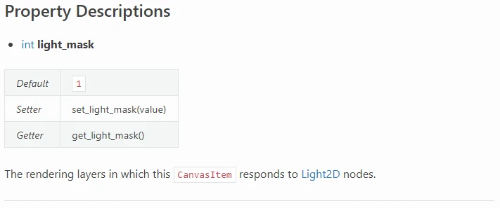
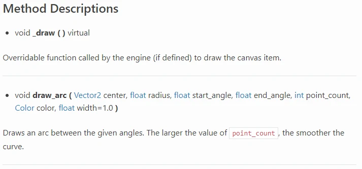

Cách đọc API của Godot
Trong trang này, bạn sẽ học cách đọc tài liệu tham khảo lớp của API Godot.
API, hay Application Programming Interface (giao diện lập trình ứng dụng), là danh mục những gì Godot cung cấp cho người dùng. Nó tóm tắt ngắn gọn những lớp nào tồn tại, chúng liên quan với nhau ra sao, chúng có những tính năng gì và cách sử dụng chúng.
Kế thừa

Ở đầu mỗi file, bạn sẽ thấy tên của lớp.
Mục "Inherits" liệt kê từng lớp mà lớp hiện tại kế thừa. Ở đây CanvasItem kế thừa Node và Node kế thừa Object.
Mục "Inherited By" liệt kê từng lớp kế thừa trực tiếp lớp hiện tại. Ở đây Control và Node2D đều kế thừa CanvasItem.
Mô tả ngắn

Tiếp theo là mô tả ngắn gọn về lớp. Đoạn văn bản này xuất hiện trong các popup của trình chỉnh sửa Godot khi tạo Node, Resource và các kiểu khác.
Mô tả

Tiếp theo là mô tả chi tiết hơn về lớp, các tính năng của nó và (các) trường hợp sử dụng.
Những gì bạn có thể tìm thấy ở đây:
Chi tiết cụ thể về cách lớp hoạt động.
Các đoạn mã mẫu cho những trường hợp sử dụng phổ biến.
Các chi tiết sử dụng chung cho tất cả phương thức của lớp.
Cảnh báo về các phụ thuộc hoặc cấu hình bắt buộc.
Liên kết đến các phần liên quan khác của API Godot.
Bài hướng dẫn

Tiếp theo, trang cung cấp liên kết đến các phần của tài liệu có nhắc đến hoặc sử dụng lớp hiện tại.
Thuộc tính

Bảng Properties liệt kê các biến thuộc về mỗi instance của lớp, còn gọi là các "thuộc tính".
Cột bên trái chứa kiểu dữ liệu của thuộc tính. Văn bản này cũng là liên kết đến trang Godot API của kiểu dữ liệu đó.
Cột giữa chứa tên của thuộc tính. Văn bản này cũng là liên kết đến phần mô tả đầy đủ của thuộc tính đó trên trang. Hãy dùng tên này để lấy dữ liệu của thuộc tính hoặc gán giá trị mới cho nó.
Cột bên phải chứa giá trị mặc định của thuộc tính. Để khởi tạo nó với một giá trị khác, bạn phải gán giá trị khác qua script hoặc Inspector.
Phương thức

Bảng Methods liệt kê các hàm thuộc về mỗi instance của lớp, còn gọi là các "phương thức".
Cột bên trái chứa kiểu dữ liệu của giá trị trả về của phương thức.
Cột bên phải chứa tên, các tham số và các từ định tính (qualifier) của phương thức. Tên là phần văn bản đứng trước dấu ngoặc mở. Nó cũng là liên kết đến phần mô tả đầy đủ của phương thức trên trang. Hãy dùng tên này để gọi phương thức.
Với mỗi tham số, trang nêu chi tiết kiểu dữ liệu, tên và giá trị mặc định (nếu có).
Các qualifier có thể có gồm...
const: phương thức không thay đổi bất kỳ dữ liệu nào trong instance của lớp.virtual: phương thức không làm gì cả, chỉ chờ một script ghi đè (override) nó.vararg: phương thức có thể nhận số lượng đối số tùy ý.
Signal

Danh sách Signals nêu chi tiết tên và tham số của các sự kiện dùng để "báo hiệu" (signal) một thay đổi trạng thái game đến các instance lớp khác.
Giống như bảng Methods, mọi tham số đều kèm kiểu dữ liệu và tên.
Mỗi signal cũng có phần giải thích chi tiết về thời điểm signal được phát ra.
Enum

Danh sách Enumerations nêu chi tiết các kiểu dữ liệu liệt kê (enum) gắn với lớp hiện tại.
Với mỗi enum, trang nêu tên rồi liệt kê các giá trị có thể có của nó.
Với mỗi giá trị enum, trang nêu tên, giá trị số nguyên và phần giải thích về (các) trường hợp sử dụng và/hoặc tác động của nó.
Hằng số

Danh sách Constants nêu chi tiết các hằng số nguyên có tên trong lớp hiện tại.
Với mỗi hằng số, trang nêu tên, giá trị số nguyên và phần giải thích về (các) trường hợp sử dụng và/hoặc tác động của nó.
Mô tả của các hằng số NOTIFICATION_* sẽ cho biết sự kiện nào của engine kích hoạt thông báo đó.
Mô tả thuộc tính

Danh sách Property Descriptions nêu chi tiết mọi thông tin về từng thuộc tính.
Nó nhắc lại kiểu dữ liệu và tên của thuộc tính.
Mọi thuộc tính trong Godot API đều được gắn với một cặp hàm setter và getter. Dùng cách nào cũng tương đương nhau. Chúng được liệt kê ở đây.
Bên dưới là phần tóm tắt chi tiết về ý nghĩa dữ liệu của thuộc tính, (các) trường hợp sử dụng và/hoặc tác động khi thay đổi nó. Phần này có thể kèm mã ví dụ và/hoặc liên kết đến các phần liên quan của Godot API.
Ghi chú
Biết tên setter và getter sẽ hữu ích khi bạn cần gắn (bind) tên phương thức hoặc Callable vào một thứ gì đó.
Mô tả phương thức

Danh sách Method Descriptions nêu chi tiết mọi thông tin về từng phương thức.
Nó nhắc lại kiểu dữ liệu trả về, tên/kiểu/giá trị mặc định của tham số và các qualifier của phương thức.
Bên dưới là phần tóm tắt chi tiết về chức năng của phương thức và (các) trường hợp sử dụng nó. Phần này có thể kèm mã ví dụ và/hoặc liên kết đến các phần liên quan của Godot API.